Laravel adalah salah satu framework PHP yang sering digunakan dalam pembuatan aplikasi web.
Framework ini menggunakan konsep arsitektur MVC atau Model-View-Controller, sehingga proses
pengembangan aplikasi dapat dilakukan dengan lebih teratur, rapi, dan mudah untuk dikelola.
Pada praktikum ini, mahasiswa dikenalkan dengan Laravel mulai dari pemahaman dasar tentang
framework Laravel, perangkat lunak yang dibutuhkan, struktur dasar project Laravel, sampai
dengan konsep MVC yang menjadi dasar utama dalam pengembangan aplikasi Laravel. Praktikum ini
menjadi tahap awal sebelum mahasiswa mengembangkan aplikasi web yang lebih kompleks menggunakan
framework Laravel.
2. Tujuan
Mahasiswa dapat memahami dasar-dasar framework Laravel sebagai framework PHP yang digunakan untuk membangun aplikasi web.
Mahasiswa dapat mengetahui tools dan kebutuhan awal yang diperlukan dalam pembuatan project Laravel.
Mahasiswa dapat mengenal struktur dasar Laravel serta memahami konsep MVC, yaitu Model, View, dan Controller.
3. Alat atau Tools yang Dipakai
Laragon atau XAMPP
Visual Studio Code
Composer
Git
Node JS
NPM
GitHub
4. Langkah Pengerjaan
Pada bagian ini dilakukan persiapan dan pengaturan awal Laravel sesuai dengan modul praktikum.
Tahapan pengerjaan dimulai dari mengecek kebutuhan sistem, membuat project Laravel, menjalankan
project, hingga memahami struktur dasar Laravel serta konsep MVC.
4.1 Mengecek Kebutuhan Sistem Laravel
Sebelum membuat project Laravel, langkah pertama yang dilakukan adalah mengecek beberapa tools
yang diperlukan. Laravel membutuhkan PHP, Composer, Git, Node JS, dan NPM agar proses pembuatan
serta pengembangan project dapat berjalan dengan baik.
Gambar 1. Pengecekan versi PHP, Composer, Git, Node JS, dan NPM.
Setelah perintah dijalankan, terminal akan menampilkan versi dari masing-masing tools. Apabila
semua tools sudah menampilkan versinya, maka tools tersebut sudah terpasang dengan benar dan
siap digunakan.
4.2 Membuat Project Laravel
Setelah seluruh kebutuhan sistem terpenuhi, langkah berikutnya adalah membuat project Laravel.
Pada praktikum ini, project Laravel dibuat menggunakan Composer atau Laravel installer.
Gambar 2. Proses pembuatan project Laravel menggunakan Composer.Gambar 3. Project Laravel berhasil dibuat dan dependency selesai dipasang.
4.3 Masuk ke Folder Project
Setelah project berhasil dibuat, langkah selanjutnya adalah masuk ke folder project dengan
menggunakan perintah berikut:
cd PrakWeb1
4.4 Menjalankan Project Laravel
Untuk menjalankan project Laravel, digunakan perintah Artisan. Setelah perintah dijalankan,
Laravel akan menjalankan server lokal. Biasanya aplikasi dapat dibuka melalui browser dengan
alamat yang tersedia. Jika berhasil, halaman awal Laravel akan muncul pada browser.
php artisan serve
Gambar 4. Halaman awal Laravel berhasil tampil di browser.
4.5 Menampilkan Halaman Hello World
Setelah project Laravel berhasil dijalankan, langkah berikutnya adalah mencoba membuat halaman
sederhana. Tujuan dari langkah ini adalah memastikan bahwa routing dan tampilan pada Laravel
sudah dapat berjalan dengan baik.
Route sederhana dibuat pada file routes/web.php seperti berikut:
Route::get('/hello', function () {
return 'Hello World';
});
Gambar 5. Penambahan route /hello pada file web.php.Gambar 6. Tampilan Hello World pada browser.
4.6 Challenge
Pada bagian challenge, mahasiswa diminta membuat route, controller, dan view sederhana.
Membuat controller dengan nama UserController.
Di dalam controller membuat function dengan nama index.
Membuat view di dalam folder resources/views/user/index.blade.php.
Pada file index, membuat tampilan HTML sederhana.
Membuat routing /user untuk menampilkan view tersebut.
Gambar 7. Pembuatan UserController dan function index.Gambar 8. Pembuatan file view index.blade.php.Gambar 9. Penambahan route /user pada file web.php.Gambar 10. Tampilan halaman user pada browser.
Perkembangan teknologi saat ini membuat aplikasi web semakin banyak digunakan dalam berbagai
bidang. Untuk membuat aplikasi web yang baik dan terstruktur, diperlukan framework yang dapat
membantu proses pengembangan menjadi lebih mudah, efisien, dan rapi. Salah satu framework PHP
yang banyak digunakan adalah Laravel. Laravel menyediakan banyak fitur untuk membantu pembuatan
aplikasi web, mulai dari pengelolaan database, pengaturan tampilan, sampai pengelolaan alur
program menggunakan konsep MVC atau Model View Controller.
Pada praktikum ini dipelajari beberapa materi dasar dalam penggunaan Laravel, yaitu migration,
seeding, routing, model, controller, dan view. Migration digunakan untuk membuat dan mengatur
struktur database menggunakan kode program, sedangkan seeding digunakan untuk mengisi data awal
ke dalam database. Routing digunakan untuk mengatur URL aplikasi, model digunakan untuk
berhubungan dengan database, controller digunakan untuk mengatur logika program, dan view
digunakan untuk menampilkan halaman antarmuka kepada pengguna menggunakan Blade Template.
2. Tujuan Praktikum
Praktikum ini bertujuan untuk memberikan pemahaman dan keterampilan dasar kepada mahasiswa dalam
membangun aplikasi web modern berbasis framework PHP dengan menerapkan konsep MVC. Mahasiswa
diharapkan mampu memahami struktur dan alur kerja Laravel sebagai salah satu framework yang
banyak digunakan dalam pengembangan aplikasi web.
Selain itu, praktikum ini bertujuan melatih kemampuan mahasiswa dalam mengelola database
menggunakan migration dan seeding, membuat serta mengatur routing aplikasi, membangun model
untuk interaksi data, membuat tampilan antarmuka menggunakan Blade Template, serta mengembangkan
controller sebagai penghubung antara model dan view. Dengan mempelajari materi tersebut,
mahasiswa diharapkan mampu memahami proses pengembangan aplikasi secara terstruktur, efisien,
dan mudah dipelihara.
3. Alat dan Bahan
Komputer atau laptop
XAMPP
Visual Studio Code
Composer
Git
Node JS
NPM
4. Langkah Praktikum
Langkah praktikum dimulai dari konfigurasi database, pembuatan migration, pengisian data awal
menggunakan seeder, pengaturan routing, pembuatan model, pembuatan controller, hingga pembuatan
tampilan menggunakan Blade. Setiap tahap saling berhubungan sehingga aplikasi Laravel dapat
mengambil data dari database dan menampilkannya pada halaman web.
4.1 Konfigurasi Database
Langkah pertama adalah membuka file .env, kemudian menyesuaikan konfigurasi
koneksi database. Database menggunakan MySQL dengan host 127.0.0.1, port
3306, username root, dan nama database
praktikum_laravel. Setelah itu, database baru dibuat melalui phpMyAdmin agar
Laravel memiliki tempat untuk menyimpan tabel dan data aplikasi.
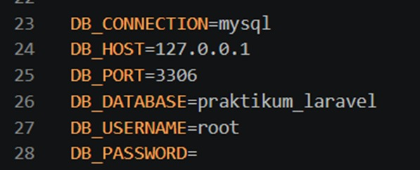
Gambar 1. Konfigurasi koneksi database Laravel.
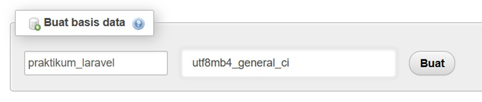
Gambar 2. Pembuatan database baru melalui phpMyAdmin.
4.2 Migration
Migration digunakan untuk membuat struktur tabel database melalui kode program. Pada praktikum
ini dibuat migration untuk tabel products menggunakan perintah:
php artisan make:migration create_products_table
Setelah file migration berhasil dibuat, file tersebut dibuka pada folder
database/migrations. Pada method up(), dibuat tabel
products dengan beberapa kolom, yaitu id sebagai primary key,
name untuk menyimpan nama produk, price untuk menyimpan harga,
description untuk menyimpan deskripsi produk, serta
timestamps() untuk membuat kolom created_at dan
updated_at secara otomatis.
Pada method down(), terdapat perintah untuk menghapus tabel
products apabila migration dibatalkan atau dilakukan rollback. Setelah struktur
migration selesai dibuat, perintah php artisan migrate dijalankan agar tabel
dibuat di database. Jika berhasil, tabel products akan muncul pada database
bersama tabel bawaan Laravel lainnya.
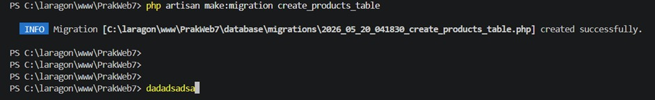
Gambar 3. Pembuatan file migration create_products_table.
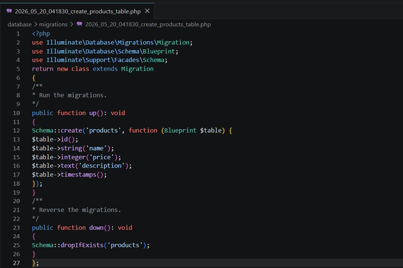
Gambar 4. Struktur tabel products pada file migration.
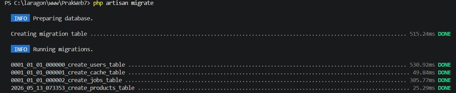
Gambar 5. Proses menjalankan migration.
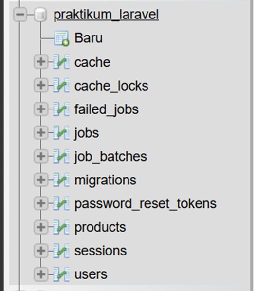
Gambar 6. Tabel products berhasil dibuat di database.
4.3 Seeding
Seeding digunakan untuk memasukkan data awal ke dalam database secara otomatis. Pada praktikum
ini dibuat file seeder bernama ProductSeeder menggunakan perintah:
php artisan make:seeder ProductSeeder
Di dalam method run(), data produk dimasukkan ke tabel
products menggunakan perintah insert. Data awal yang digunakan adalah contoh
produk seperti Laptop dan Mouse, lengkap dengan harga dan deskripsi. Kolom
created_at dan updated_at diisi menggunakan fungsi
now() agar waktu pembuatan dan pembaruan data tercatat otomatis.
Setelah file seeder dibuat, pemanggilan ProductSeeder ditambahkan pada file
DatabaseSeeder.php. Selanjutnya perintah php artisan db:seed
dijalankan di terminal agar data awal masuk ke database. Seeder berguna untuk membuat data awal
atau data dummy sehingga proses pengujian aplikasi dapat dilakukan tanpa memasukkan data secara
manual satu per satu.
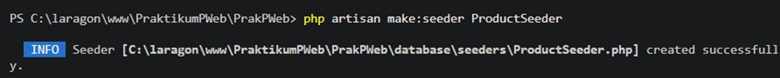
Gambar 7. Pembuatan file ProductSeeder.
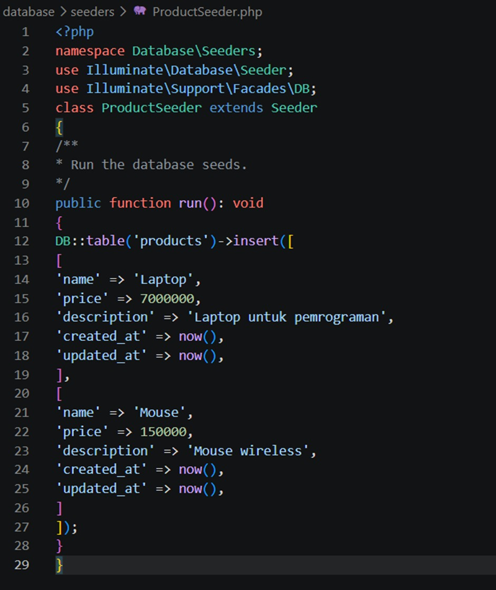
Gambar 8. Pengisian data awal produk pada seeder.
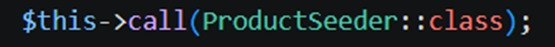
Gambar 9. Pemanggilan ProductSeeder pada DatabaseSeeder.
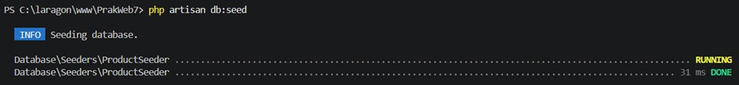
Gambar 10. Proses menjalankan seeder.
4.4 Routing
Routing berfungsi untuk mengatur alamat URL yang dapat diakses oleh pengguna. Pada Laravel,
routing umumnya ditulis pada file routes/web.php. Pada praktikum ini dipelajari
beberapa jenis routing, yaitu routing dasar, routing parameter, named route, dan route group.
Routing dasar digunakan untuk menampilkan respon sederhana ketika URL tertentu diakses. Routing
parameter digunakan untuk menerima nilai dari URL, misalnya ID produk. Named route digunakan
untuk memberikan nama pada route agar lebih mudah dipanggil kembali. Sementara itu, route group
digunakan untuk mengelompokkan beberapa route yang memiliki prefix atau awalan URL yang sama,
seperti halaman admin.
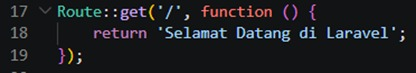
Gambar 11. Contoh routing dasar pada Laravel.
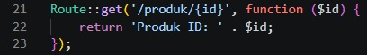
Gambar 12. Contoh routing parameter pada Laravel.
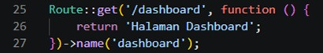
Gambar 13. Contoh named route pada Laravel.
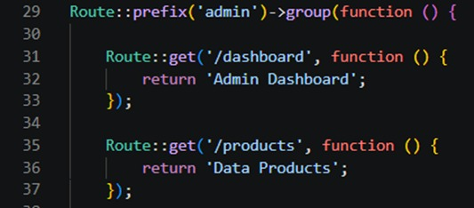
Gambar 14. Contoh route group pada Laravel.
4.5 Model
Model digunakan untuk berinteraksi dengan tabel pada database. Pada praktikum ini dibuat model
Product yang berada pada direktori app/Models. Model tersebut
mewakili tabel products dan memungkinkan aplikasi melakukan operasi database
seperti mengambil, menambah, mengubah, dan menghapus data.
Pada class Product, digunakan trait HasFactory dan property
$fillable. Property $fillable berisi daftar kolom yang boleh
diisi secara massal, yaitu name, price, dan
description. Dengan pengaturan ini, Laravel dapat menjaga keamanan data agar
hanya field tertentu yang dapat diproses saat melakukan input data.
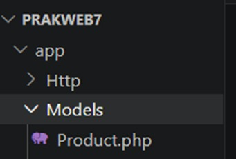
Gambar 15. Pembuatan model Product.
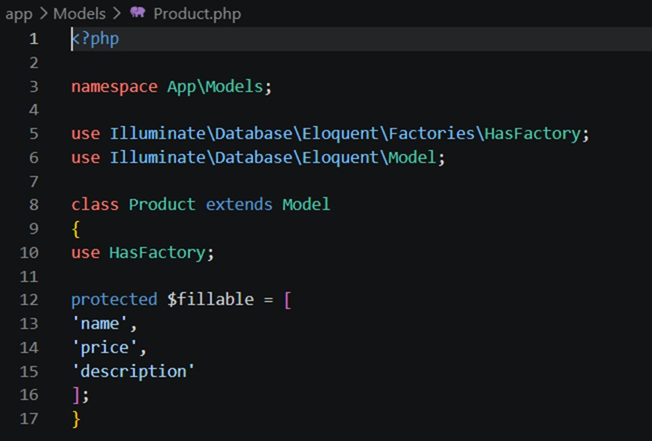
Gambar 16. Pengaturan fillable pada model Product.
4.6 Controller
Controller digunakan untuk mengatur logika aplikasi dan menjadi penghubung antara model dengan
view. Pada praktikum ini dibuat controller bernama ProductController menggunakan
perintah:
php artisan make:controller ProductController
Di dalam controller dibuat method index(). Method ini mengambil seluruh data
produk dari database menggunakan model Product, kemudian mengirimkan data
tersebut ke halaman view bernama products. Dengan cara ini, controller berperan
sebagai pusat pengatur alur data dari database menuju halaman web.
Route kemudian dihubungkan ke controller agar ketika URL tertentu diakses, method
index() pada ProductController dijalankan. Selain route biasa,
juga dipelajari penggunaan Route::resource yang dapat memetakan fungsi CRUD
secara otomatis ke controller.
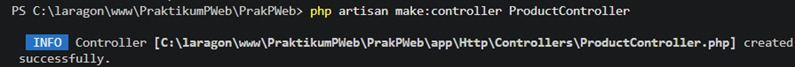
Gambar 17. Pembuatan controller ProductController.
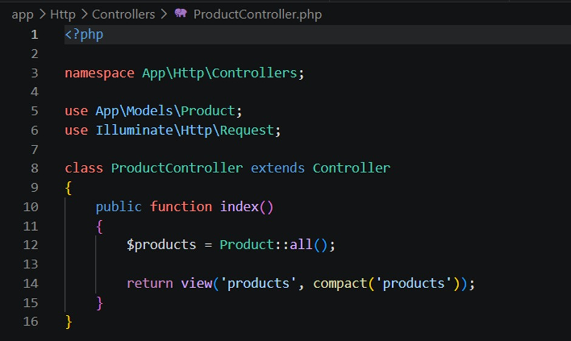
Gambar 18. Method index untuk mengambil data produk.
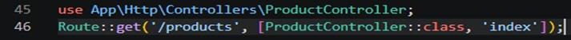
Gambar 19. Menghubungkan route ke controller.
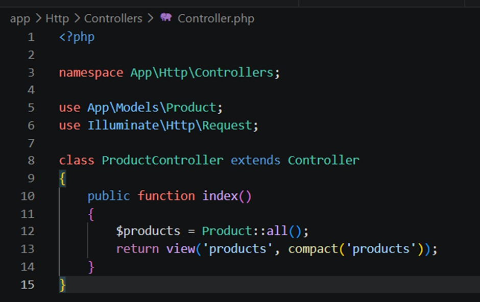
Gambar 20. Controller dengan model Product.
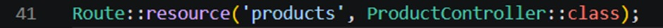
Gambar 21. Penggunaan resource route pada Laravel.
4.7 View dan Blade Layout
View digunakan untuk menampilkan data kepada pengguna. Laravel menggunakan Blade Template untuk
membuat tampilan yang lebih rapi dan mudah digunakan kembali. Pada praktikum ini dibuat file
layout utama pada resources/views/layouts/app.blade.php. Layout tersebut berisi
struktur dasar HTML, bagian judul halaman, serta area konten yang dapat diisi oleh halaman lain.
Selanjutnya dibuat file view products.blade.php yang menggunakan layout utama
tersebut. File ini mengatur judul halaman dengan directive @section('title'),
kemudian menampilkan daftar produk menggunakan perulangan @foreach. Data produk
yang dikirim dari controller ditampilkan dalam bentuk daftar sehingga pengguna dapat melihat nama,
harga, dan deskripsi produk pada halaman web.
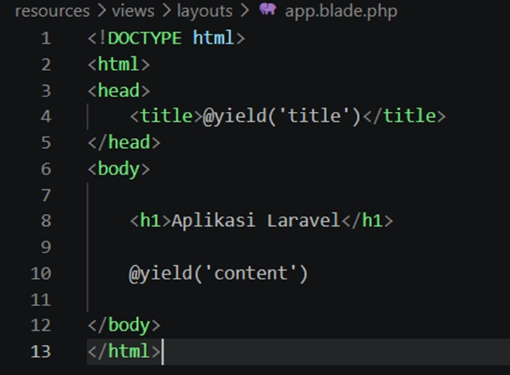
Gambar 22. Pembuatan layout utama Blade.
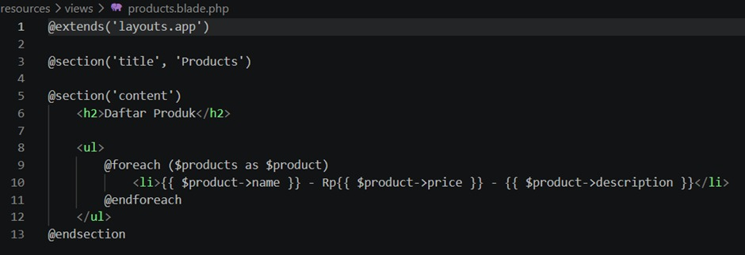
Gambar 23. View products yang menggunakan layout Blade.
5. Tugas
Pada bagian tugas, dibuat aplikasi sederhana untuk mengelola data mahasiswa. Database baru dibuat
dengan nama db_mahasiswa, kemudian konfigurasi database pada file
.env disesuaikan agar Laravel terhubung ke database tersebut.
Setelah koneksi database diatur, dibuat model Mahasiswa pada direktori
app/Models. Model ini memiliki property $fillable untuk
mengizinkan penyimpanan data pada kolom nim, nama, dan
jurusan. Selanjutnya dibuat migration untuk tabel mahasiswas
dengan kolom id, nim, nama,
jurusan, serta timestamps.
Setelah migration selesai disusun, perintah php artisan migrate dijalankan untuk
membuat tabel pada database. Berikutnya dibuat MahasiswaSeeder untuk mengisi
data awal mahasiswa, lalu seeder tersebut dipanggil melalui DatabaseSeeder.php
dan dijalankan menggunakan perintah php artisan migrate --seed.
Untuk mengatur alur aplikasi, file web.php ditambahkan route resource yang
mengarah ke MahasiswaController. Controller tersebut berisi method untuk
menampilkan data, menyimpan data baru, mengubah data, dan menghapus data. Selanjutnya dibuat
tampilan pada folder resources/views/mahasiswa, yaitu halaman
index.blade.php untuk menampilkan daftar mahasiswa,
create.blade.php untuk menambah data, dan edit.blade.php untuk
mengubah data.
Hasil akhir dari tugas ini adalah halaman daftar mahasiswa yang menampilkan data dalam bentuk
tabel. Pengguna dapat menambah data mahasiswa baru, mengedit data yang sudah ada, dan menghapus
data dengan konfirmasi terlebih dahulu. Dengan tugas ini, konsep migration, seeding, routing,
model, controller, dan view diterapkan secara lengkap dalam bentuk aplikasi CRUD sederhana.
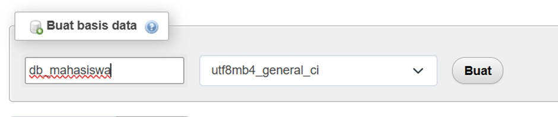
Gambar 24. Pembuatan database db_mahasiswa.
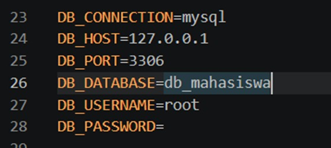
Gambar 25. Konfigurasi file .env untuk database db_mahasiswa.
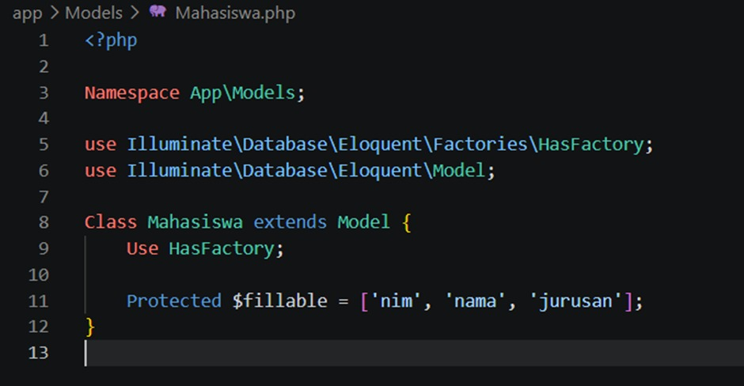
Gambar 26. Pembuatan model Mahasiswa.
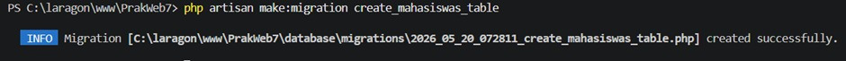
Gambar 27. Pembuatan migration tabel mahasiswas.
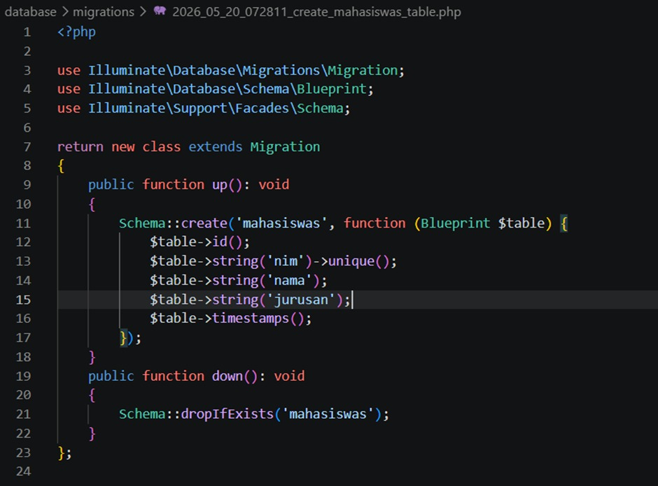
Gambar 28. Struktur tabel mahasiswas pada migration.
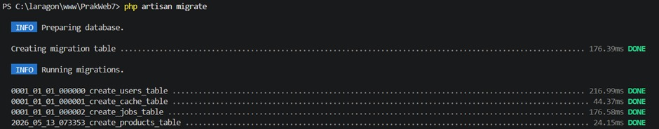
Gambar 29. Menjalankan migration untuk tabel mahasiswas.
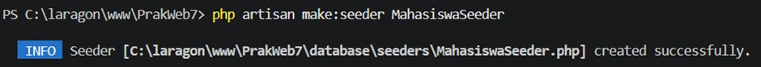
Gambar 30. Pembuatan file MahasiswaSeeder.
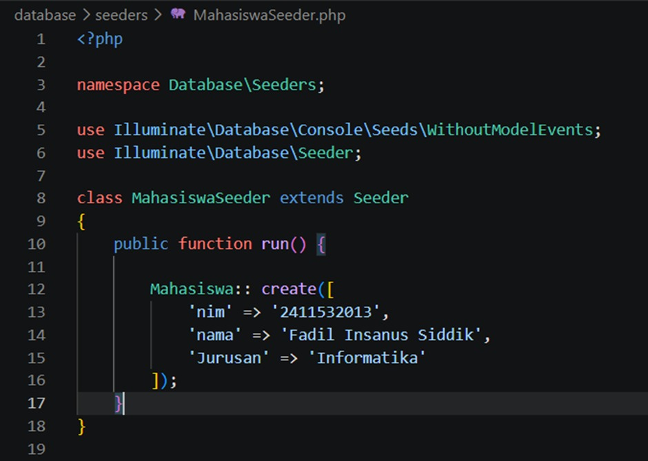
Gambar 31. Pembuatan data awal pada MahasiswaSeeder.
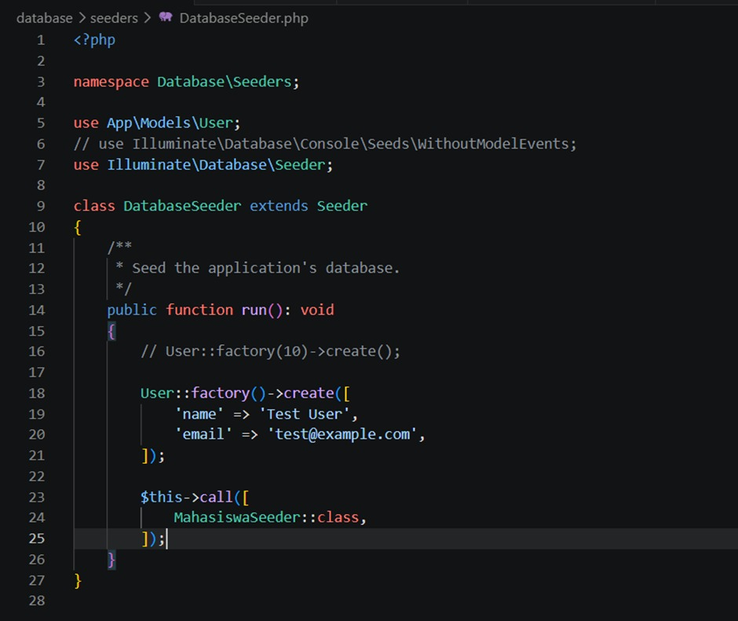
Gambar 32. Pemanggilan MahasiswaSeeder pada DatabaseSeeder.
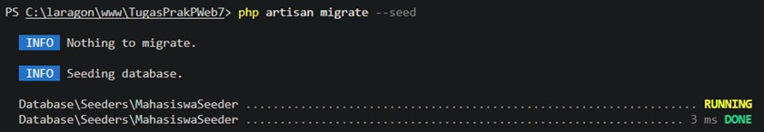
Gambar 33. Menjalankan seeder melalui perintah migrate --seed.
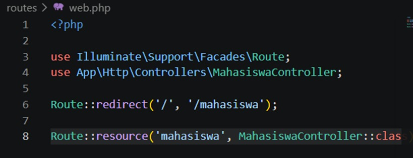
Gambar 34. Route resource untuk halaman mahasiswa.
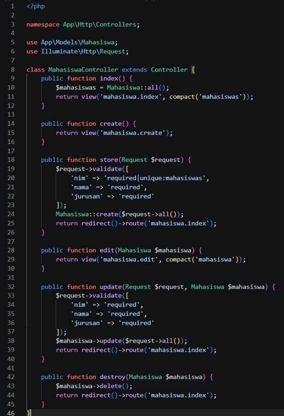
Gambar 35. Controller CRUD untuk data mahasiswa.
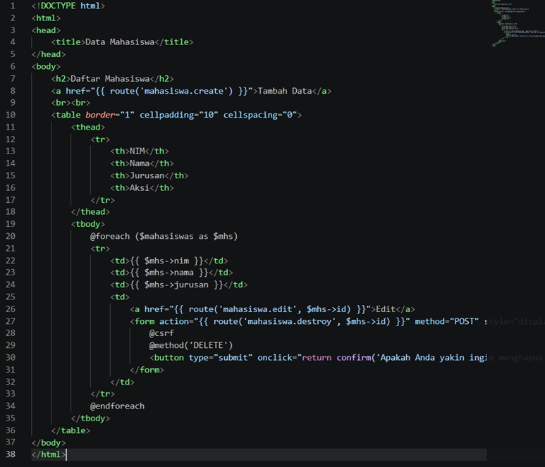
Gambar 36. View index untuk menampilkan daftar mahasiswa.
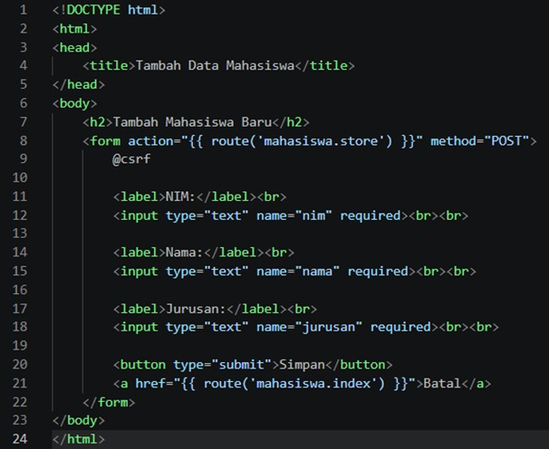
Gambar 37. View create untuk menambah data mahasiswa.
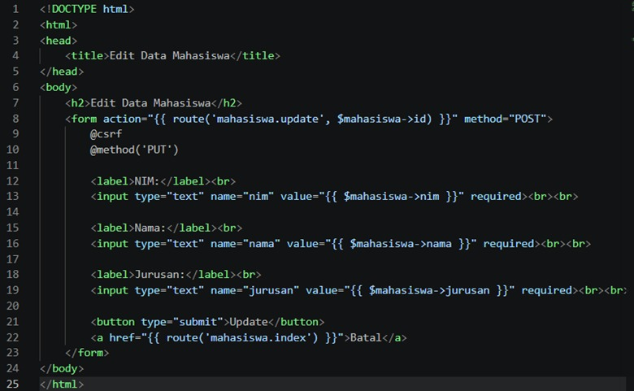
Gambar 38. View edit untuk mengubah data mahasiswa.
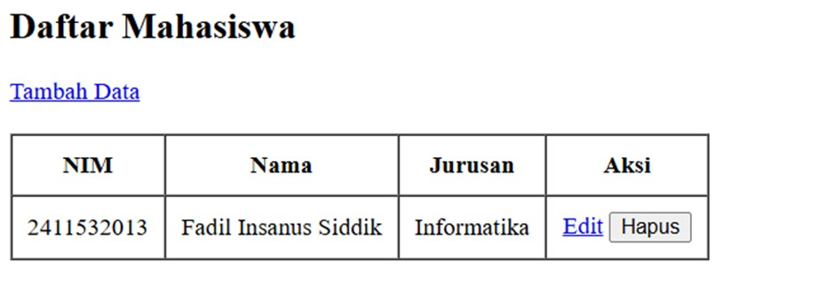
Gambar 39. Output awal daftar mahasiswa.
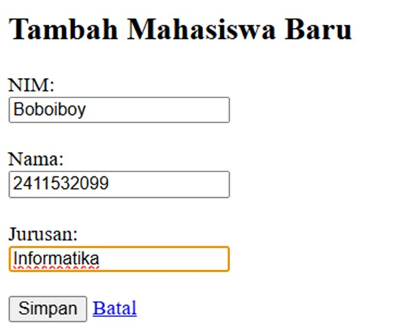
Gambar 40. Tampilan form tambah mahasiswa baru.
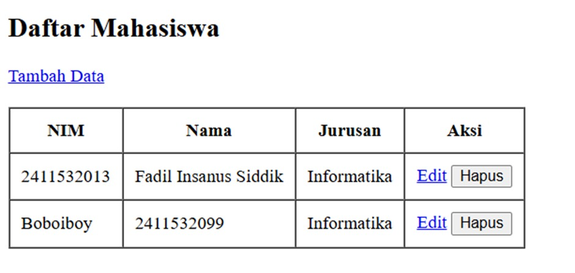
Gambar 41. Output daftar mahasiswa setelah penambahan data.
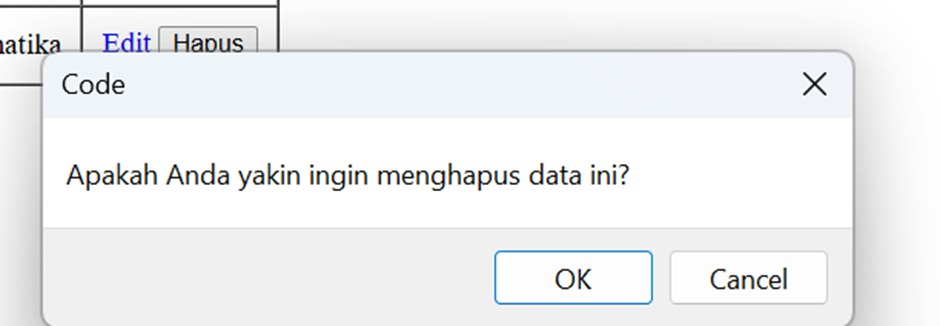
Gambar 42. Konfirmasi sebelum menghapus data mahasiswa.